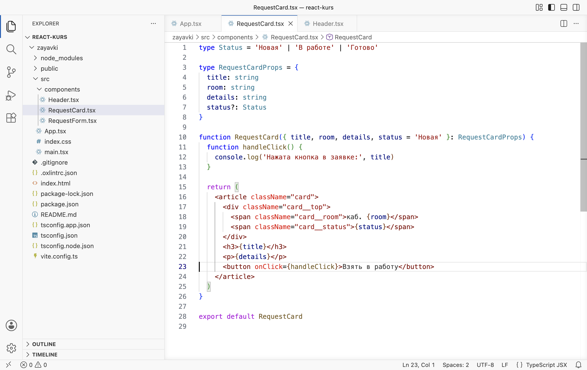
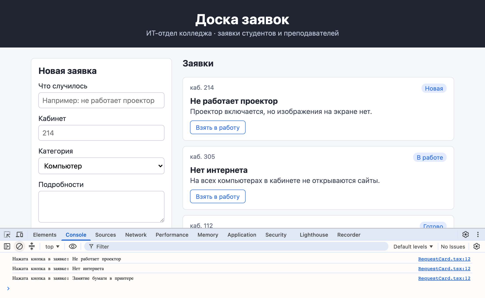
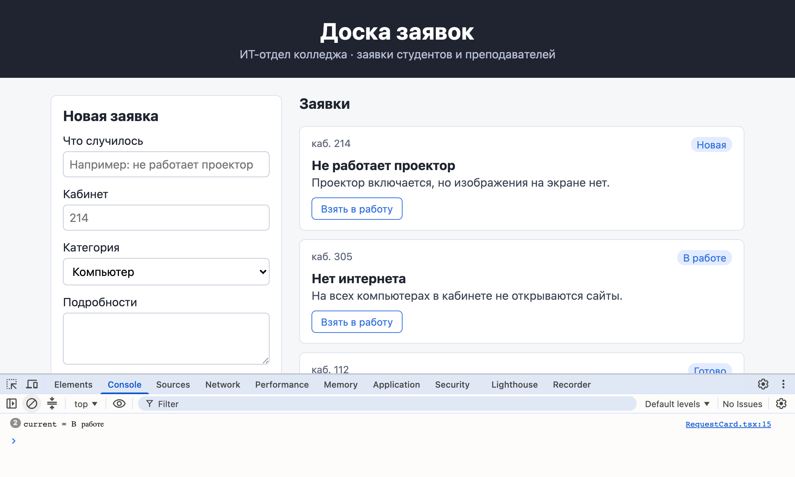
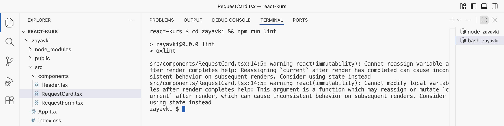
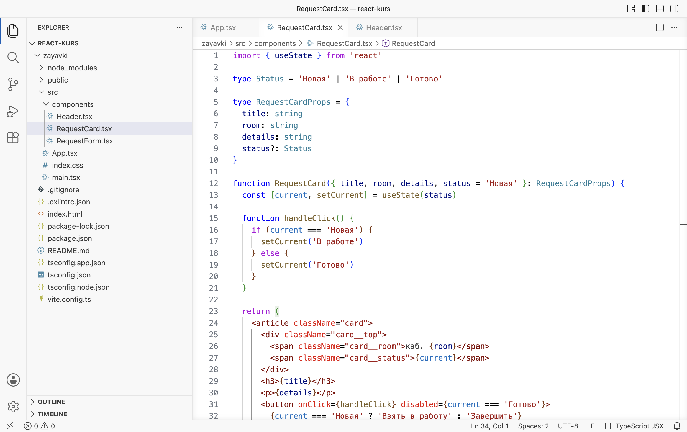
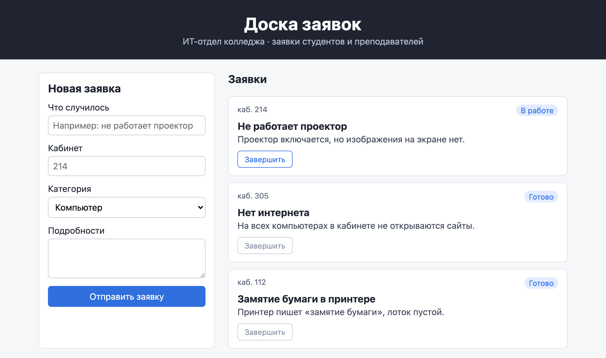
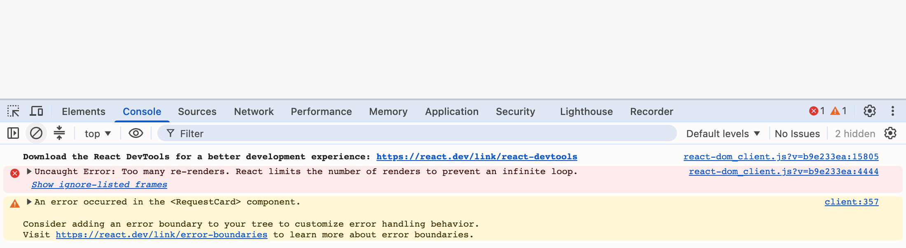
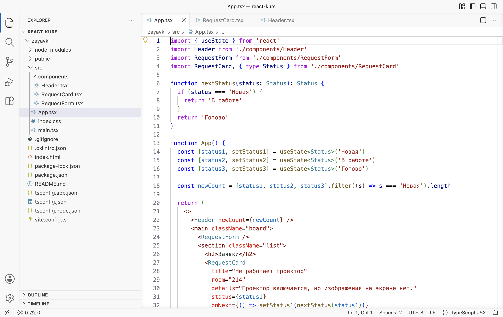
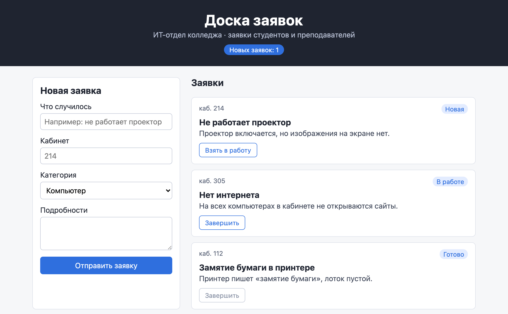
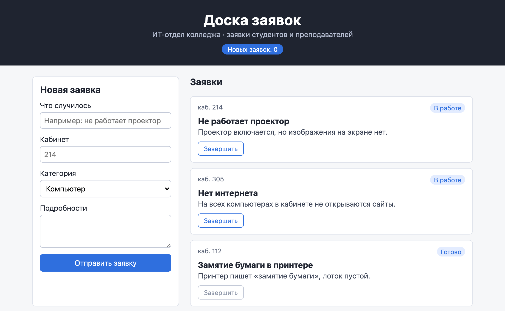

Справочник по Angular и React · модуль 1 · первый проект и первый бот
1.4
Состояние
и события
В этой главе разобрано, как страница на React отвечает на действия пользователя. У карточки заявки появляется кнопка «Взять в работу», и по нажатию статус меняется на экране. Сначала показано, как подключить к кнопке функцию-обработчик и проверить её в консоли браузера. Затем — опыт с обычной переменной, которая меняется, а страница остаётся прежней, и хук useState, с которым новый статус появляется на экране. В конце состояние переносится из карточки в App, чтобы шапка доски показывала число новых заявок.
- Категория
- React
- Уровень
- Начальный
- Что понадобится
- Проект
zayavkiпосле главы 1.3 (или архив ниже), запущенныйnpm run dev, браузер Chrome, Edge или Яндекс Браузер - Результат
- Кнопка в карточке переводит заявку из «Новая» в «В работе» и «Готово», шапка показывает число новых заявок
Если проекта нет или он в другом состоянии
Архив содержит проект zayavki в том состоянии, с которого начинается глава, — после главы 1.3. Папки node_modules в архиве нет: её создаёт команда npm install по списку пакетов из package.json.
Архив закрыт паролем. После нажатия на кнопку введите пароль — его сообщает преподаватель.
- Распакуйте архив в папку с проектами курса, например
react-kurs. Появится папкаzayavki. Если папка с таким именем там уже есть, сначала переименуйте старую, например вzayavki-staraya. - Откройте папку курса в VS Code: File → Open Folder.
- Откройте терминал (Terminal → New Terminal) и выполните три команды по очереди. Последняя запускает сервер разработки; страница открывается по адресу
http://localhost:5173/.
cd zayavki npm install npm run dev
§1Событие и обработчик
В лифте нажатие кнопки этажа — событие. Что после этого произойдёт, заложено заранее в схему лифта: закрыть двери и ехать на нужный этаж. Пассажир нажимает кнопку, действие выполняет механизм, подключённый к ней.
В лифте реакция на кнопку заложена при сборке. В React функцию, которая выполнится при нажатии, пишет разработчик.
Событие — то, что происходит на странице и о чём браузер может сообщить программе: щелчок мышью, нажатие клавиши, ввод текста в поле, отправка формы. Обработчик события — функция, которую браузер вызывает, когда событие произошло. В React обработчик подключают к тегу атрибутом, имя которого начинается с on: onClick — щелчок, onChange — изменение поля, onSubmit — отправка формы. Значение атрибута — сама функция в фигурных скобках: <button onClick={handleClick}>.
Функцию-обработчик обычно объявляют внутри компонента, перед return. По договорённости её имя начинается с handle («обработать») и продолжается названием события: handleClick, handleSubmit. Так по имени видно, что функция вызывается браузером в ответ на действие пользователя.
Кнопка в карточке
В первой версии обработчик печатает сообщение в консоль браузера, страница при этом не меняется. По сообщению в консоли видно, что щелчок дошёл до функции.
ДелаемКнопка с обработчиком
- Добавьте стили кнопки
Откройте
src/index.css, вставьте в самый конец файла правила ниже и сохраните.zayavki/src/index.css · в конец файла .card button { margin-top: 12px; padding: 6px 12px; border: 1px solid #2f6fde; border-radius: 6px; background: #ffffff; color: #2f6fde; font: inherit; font-size: 14px; cursor: pointer; } .card button:disabled { border-color: #c4cad8; color: #8a93a6; cursor: default; }Первое правило оформляет кнопку внутри карточки: синяя рамка, белый фон, отступ сверху. Второе, с
:disabled, задаёт серый вид выключенной кнопки; выключенная кнопка понадобится в §3. - Замените содержимое RequestCard.tsx
Откройте
src/components/RequestCard.tsx, замените весь текст кодом ниже и сохраните.zayavki/src/components/RequestCard.tsx type Status = 'Новая' | 'В работе' | 'Готово' type RequestCardProps = { title: string room: string details: string status?: Status } function RequestCard({ title, room, details, status = 'Новая' }: RequestCardProps) { function handleClick() { console.log('Нажата кнопка в заявке:', title) } return ( <article className="card"> <div className="card__top"> <span className="card__room">каб. {room}</span> <span className="card__status">{status}</span> </div> <h3>{title}</h3> <p>{details}</p> <button onClick={handleClick}>Взять в работу</button> </article> ) } export default RequestCard

Так должен выглядеть RequestCard.tsx: функция handleClick перед return, кнопка в конце карточки - Откройте консоль браузера
В браузере с доской заявок нажмите F12 (на macOS — Cmd+Option+J) и выберите вкладку Console. Консоль остаётся открытой до конца главы.
- Нажмите кнопки
Нажмите «Взять в работу» в каждой из трёх карточек. В консоли появится по сообщению на каждое нажатие.

Так должен выглядеть результат: под каждой заявкой кнопка, в консоли три сообщения — по одному на нажатие
РазбираемсяЧто делает обработчик
function RequestCard({ title, room, details, status = 'Новая' }: RequestCardProps) { function handleClick() { 1 console.log('Нажата кнопка в заявке:', title) 2 } return ( <article className="card"> <div className="card__top"> <span className="card__room">каб. {room}</span> <span className="card__status">{status}</span> </div> <h3>{title}</h3> <p>{details}</p> <button onClick={handleClick}>Взять в работу</button> 3
- 1
«Вот что делать при нажатии». Функция с именем
handleClick(«обработать щелчок») записана внутри карточки, передreturn. Сама по себе она ничего не делает, пока её не вызовут. - 2
Единственное действие — напечатать в консоль браузера фразу и название заявки.
console.logпечатает свои значения через пробел. Консоль — панель инструментов разработчика: на самой странице этих сообщений не видно. Справа от сообщения в консоли указан файл и строка, откуда оно напечатано:RequestCard.tsx:12. - 3
«При щелчке по кнопке вызови
handleClick».onClick— атрибут для щелчка. В фигурных скобках — имя функции без круглых скобок: кнопка получает саму функцию и вызовет её, когда по ней щёлкнут.
У каждой карточки свой обработчик с её собственным title: функция RequestCard вызывается три раза, и при каждом вызове создаётся отдельная handleClick. Поэтому в консоли три разных названия заявок. При открытии страницы в консоли может быть и сообщение React с предложением установить расширение React DevTools; для работы в этой главе оно не требуется.
В onClick={handleClick} после имени функции нет круглых скобок. Запись без скобок передаёт кнопке саму функцию, и браузер вызовет её при щелчке. Запись onClick={handleClick()} вызывает функцию сразу, при отрисовке карточки, и передаёт кнопке её результат. Что из этого получается, показано в §3.
Щелчок доходит до обработчика. Следующий шаг — изменение статуса заявки в обработчике.
§2Опыт с обычной переменной
Изменяемые данные в JavaScript хранят в переменной, объявленной словом let. Опыт проверяет, можно ли так хранить статус: переменная выводится в разметке и меняется в обработчике.
ДелаемОпыт: статус в обычной переменной
- Замените содержимое RequestCard.tsx версией для опыта
Замените весь текст
RequestCard.tsxкодом ниже и сохраните.zayavki/src/components/RequestCard.tsx · опыт type Status = 'Новая' | 'В работе' | 'Готово' type RequestCardProps = { title: string room: string details: string status?: Status } function RequestCard({ title, room, details, status = 'Новая' }: RequestCardProps) { let current = status function handleClick() { current = 'В работе' console.log('current =', current) } return ( <article className="card"> <div className="card__top"> <span className="card__room">каб. {room}</span> <span className="card__status">{current}</span> </div> <h3>{title}</h3> <p>{details}</p> <button onClick={handleClick}>Взять в работу</button> </article> ) } export default RequestCard
- Нажмите кнопку дважды
Нажмите «Взять в работу» в первой карточке два раза. В консоли новое значение, а на карточке по-прежнему «Новая».

Опыт с переменной: в консоли current = В работе, на карточке по-прежнему «Новая» - Запустите линтер
Откройте второй терминал: Terminal → New Terminal. Первый занят сервером разработки. Выполните команду:
Терминал cd zayavki && npm run lint

Линтер выводит два предупреждения для строки 14 — присваивания в обработчике
РазбираемсяПочему страница не изменилась
Изменились три места. В строке 11 объявлена переменная current («текущий статус») с начальным значением из props. В обработчике ей присваивается 'В работе', и новое значение печатается в консоль. В разметке на месте статуса стоит {current}.
В консоли сообщение current = В работе; кружок с цифрой 2 слева означает, что одинаковое сообщение напечатано два раза подряд. Значит, обработчик выполнился и переменная изменилась, но статус на карточке остался «Новая».
Причина в том, как React строит страницу. Разметку карточки возвращает функция RequestCard, и React вызывает её, когда отрисовывает компонент. Вызов функции компонента называется отрисовкой (в документации — render). После отрисовки React переносит полученную разметку в страницу и больше функцию не вызывает, пока не получит сигнал, что данные изменились. Присваивание current = 'В работе' такого сигнала не даёт: переменная поменялась, но функция RequestCard не вызвана заново, и разметка на странице осталась от первой отрисовки.
Если бы React и вызвал функцию заново, статус всё равно вернулся бы к «Новая». Строка let current = status выполняется при каждом вызове и создаёт переменную с начальным значением. Обычная переменная существует только внутри одного вызова функции.
Линтер Oxlint, установленный в проект в главе 1.1, находит эту ошибку без запуска страницы. Оба предупреждения относятся к строке 14, символ 5 — к присваиванию current = 'В работе'. Первое переводится так: «нельзя присваивать переменной новое значение после завершения отрисовки; это может привести к несогласованному поведению при следующих отрисовках». В конце обоих сообщений подсказка: Consider using state instead — «используйте вместо этого состояние».
Нужна переменная, которая сохраняет значение между вызовами функции и при изменении вызывает отрисовку заново. В React это состояние.
§3Состояние: хук useState
В поликлинике над кабинетом висит табло с номером талона. Если врач запишет номер следующего пациента на листке у себя на столе, в коридоре номер не изменится. Чтобы номер поменялся для всех, врач нажимает кнопку пульта, и табло показывает новое значение. Обычная переменная из §2 похожа на листок на столе, функция изменения из useState — на кнопку пульта.
Табло меняет одно число. React после вызова функции изменения вызывает функцию компонента заново и переносит на страницу отличия новой разметки от прежней.
Состояние (state) — данные компонента, которые React хранит между отрисовками и при изменении которых отрисовывает компонент заново. Состояние создаётся функцией useState из библиотеки React. Функции React, имена которых начинаются с use, называются хуками (от англ. hook — крючок): через них компонент пользуется механизмами React, например хранением состояния.
const [current, setCurrent] = useState(status)
useState(status) получает начальное значение — здесь статус из props — и возвращает пару: текущее значение и функцию для его изменения. Квадратные скобки слева раскладывают пару по двум переменным, так же как фигурные скобки в главе 1.3 распаковывали объект props. Имена выбирает разработчик; по договорённости вторая переменная называется как первая с приставкой set: current и setCurrent. Слово const означает, что переменной нельзя присвоить другое значение: значение меняется только через setCurrent.
Вызов setCurrent('В работе') делает две вещи. Он сохраняет новое значение в React и сообщает React, что компонент нужно отрисовать заново. При следующем вызове функции RequestCard строка с useState вернёт уже 'В работе'; начальное значение используется только при первой отрисовке.
ДелаемСтатус в состоянии
- Замените содержимое RequestCard.tsx
zayavki/src/components/RequestCard.tsx import { useState } from 'react' type Status = 'Новая' | 'В работе' | 'Готово' type RequestCardProps = { title: string room: string details: string status?: Status } function RequestCard({ title, room, details, status = 'Новая' }: RequestCardProps) { const [current, setCurrent] = useState(status) function handleClick() { if (current === 'Новая') { setCurrent('В работе') } else { setCurrent('Готово') } } return ( <article className="card"> <div className="card__top"> <span className="card__room">каб. {room}</span> <span className="card__status">{current}</span> </div> <h3>{title}</h3> <p>{details}</p> <button onClick={handleClick} disabled={current === 'Готово'}> {current === 'Новая' ? 'Взять в работу' : 'Завершить'} </button> </article> ) } export default RequestCard

Так должен выглядеть RequestCard.tsx: импорт useState в первой строке, состояние в строке 13 - Проверьте кнопки
Обновите страницу (F5). Нажмите «Взять в работу» в первой карточке и «Завершить» во второй: вторая заявка с начала «В работе».

Так должна выглядеть страница: первая заявка «В работе», вторая и третья «Готово», их кнопки выключены
РазбираемсяЧто изменилось в карточке
import { useState } from 'react' 1 type Status = 'Новая' | 'В работе' | 'Готово' type RequestCardProps = { title: string room: string details: string status?: Status } function RequestCard({ title, room, details, status = 'Новая' }: RequestCardProps) { const [current, setCurrent] = useState(status) 2 function handleClick() { if (current === 'Новая') { 3 setCurrent('В работе') 4 } else { setCurrent('Готово') } } return ( <article className="card"> <div className="card__top"> <span className="card__room">каб. {room}</span> <span className="card__status">{current}</span> 5 </div> <h3>{title}</h3> <p>{details}</p> <button onClick={handleClick} disabled={current === 'Готово'}> 6 {current === 'Новая' ? 'Взять в работу' : 'Завершить'} 7 </button> </article> ) } export default RequestCard
- 1
«Возьми из библиотеки React функцию
useState». Фигурные скобки значат, что из большой библиотеки берётся одна функция с этим именем. - 2
«Заведи для карточки память о статусе». Слева два имени:
current— что лежит в памяти сейчас,setCurrent— кнопка пульта, которой память меняют. СправаuseState(status): начальное значение берётся из props.constзначит, что переменной нельзя присвоить другое значение знаком=: меняется она только черезsetCurrent. - 3
«Если статус сейчас "Новая"…».
if— «если»,===— «равно». Условие в круглых скобках даёт «да» или «нет». - 4
«…поменяй на "В работе"». Иначе (
else, строка 18) — на «Готово». Одна кнопка проводит заявку по двум шагам. - 5
На карточке показывается значение из памяти —
current. После щелчка оно станет другим, а статус из props останется прежним. - 6
disabledвыключает кнопку, если в скобках получилось «да». У готовой заявки кнопка серая и не нажимается: переводить дальше некуда. - 7
Текст кнопки выбирается по условию:
условие ? если да : если нет. Пока заявка новая — «Взять в работу», потом — «Завершить». Это тернарный оператор. Обычныйifв фигурных скобках разметки писать нельзя, а такую запись можно.
Если сразу после setCurrent('В работе') в том же обработчике напечатать console.log(current), в консоли будет прежнее значение, «Новая». Вызов setCurrent не меняет переменную current в текущем вызове функции: новое значение она получит при следующей отрисовке. Поэтому в обработчике решение принимается по значению, которое было на экране в момент щелчка.
ДелаемОпыт: скобки после имени обработчика
В §1 говорилось, что после имени обработчика в onClick скобки не ставятся. Опыт показывает, что будет, если их поставить.
- Добавьте скобки
В
RequestCard.tsxв строке с кнопкой заменитеonClick={handleClick}наonClick={handleClick()}и сохраните. - Посмотрите на страницу и консоль
Страница стала пустой, в консоли ошибка.

При onClick={handleClick()} страница пустая, в консоли — Too many re-renders - Уберите скобки
Верните
onClick={handleClick}и сохраните. Карточки снова на странице.
РазбираемсяЧто написано в ошибке
Ошибка Too many re-renders. React limits the number of renders to prevent an infinite loop переводится как «слишком много повторных отрисовок; React ограничивает их число, чтобы не допустить бесконечного цикла». Со скобками handleClick выполняется во время отрисовки и вызывает setCurrent. Вызов setCurrent требует новой отрисовки, в ней снова выполняется handleClick, и цикл не заканчивается. Строка ниже, An error occurred in the <RequestCard> component, указывает компонент, в котором произошла ошибка. Ту же ошибку до запуска показывает редактор: Type 'void' is not assignable to type 'MouseEventHandler<HTMLButtonElement> | undefined' — «результат функции нельзя передать туда, где ожидается обработчик щелчка».
Кнопки работают. Следующий раздел показывает шаги между щелчком и новым статусом на экране.
§4Как React обновляет страницу
Между щелчком и новым статусом на экране проходит пять шагов. Схема ниже показывает их на первой карточке.
Шаги от щелчка до нового статуса на экране
Шаги 1–3 выполняет код обработчика. На шаге 4 React вызывает функцию компонента заново, и useState возвращает новое значение. На шаге 5 изменения попадают на страницу.
На шаге 5 React сравнивает разметку, которую функция вернула сейчас, с разметкой прошлой отрисовки и меняет в браузере только отличия — здесь текст статуса и текст кнопки. Остальная страница не перестраивается. Повторный вызов функции компонента React выполняет при каждом изменении состояния. Это та же формула из главы 0.1: интерфейс — функция от состояния, UI = f(state). Разработчик описывает, как выглядит карточка при данном статусе, а перенос изменений на страницу выполняет React.
Те же шаги по строкам кода карточки — в разборе ниже.
function RequestCard({ title, room, details, status = 'Новая' }: RequestCardProps) { const [current, setCurrent] = useState(status) function handleClick() { if (current === 'Новая') { setCurrent('В работе') } else { setCurrent('Готово') } } return ( <article className="card"> <div className="card__top"> <span className="card__room">каб. {room}</span> <span className="card__status">{current}</span> </div> <h3>{title}</h3> <p>{details}</p> <button onClick={handleClick} disabled={current === 'Готово'}> {current === 'Новая' ? 'Взять в работу' : 'Завершить'} </button> </article> ) }
- Первая отрисовка
React вызывает
RequestCardв первый раз.useStateзаводит память с начальным значением из props.current'Новая'каб. 214Не работает проекторНовая[Взять в работу] - Щелчок по кнопке
Пользователь нажимает «Взять в работу». Браузер вызывает функцию, которую кнопка получила в
onClick, —handleClick. - Условие и новое значение
currentравен «Новая», условие даёт «да». ВыполняетсяsetCurrent('В работе'): новое значение уходит в память React, и React получает сигнал перерисовать карточку.память React'В работе' - Функция вызывается заново
React снова вызывает
RequestCard. На этот разuseStateотдаёт значение из памяти; начальное значение больше не используется.current'В работе' - Новая разметка
В статусе теперь «В работе», текст кнопки — «Завершить». React сравнивает с прошлой разметкой и меняет на странице только эти два места.
каб. 214Не работает проекторВ работе[Завершить]
У каждой карточки своё состояние
На снимке в §3 первая карточка перешла в «В работе», вторая — в «Готово», и друг на друга они не повлияли. Состояние привязано к каждому вызову RequestCard на странице. React хранит отдельную пару «значение и функция изменения» для каждой из трёх карточек и при отрисовке выдаёт каждой её собственное значение. Тот же компонент, вызванный в другом месте, начнёт со своего начального значения.
Каждая карточка хранит свой статус. Следующая задача — вывести в шапке число новых заявок, а для этого статусы нужны в одном месте.
§5Состояние в родителе
В ИТ-отделе три мастера, и каждый отмечает свои заявки в личном блокноте. Начальник отдела хочет знать, сколько заявок ещё никто не взял, и ему приходится обходить всех мастеров. Если журнал заявок лежит на столе у диспетчера, ответ виден сразу, а мастер, взяв заявку, звонит диспетчеру, и тот делает отметку в журнале.
Мастер звонит и сообщает, что взял заявку, — так карточка вызывает функцию, переданную ей от App.
Шапка доски должна показывать «Новых заявок: 1». Для этого числа нужны статусы всех трёх заявок. Сейчас каждый статус хранится внутри своей карточки, и у App и Header к нему доступа нет: данные в React передаются только от родителя к ребёнку (глава 1.3, §6). Решение — хранить состояние в ближайшем общем родителе тех компонентов, которым оно нужно. Для карточек и шапки это App. Перенос состояния из дочерних компонентов в родителя называется подъёмом состояния (lifting state up).
После подъёма карточка снова получает статус через props, как в главе 1.3. Но менять его она не может: props только для чтения. Поэтому вместе со статусом родитель передаёт карточке функцию — prop onNext. Карточка вызывает её при щелчке, а функция в App меняет состояние. Prop с функцией, через который ребёнок сообщает родителю о событии, по договорённости называют с приставкой on: onNext, onDelete, onSave.
Передача данных и событий между App, шапкой и карточками
Статусы хранятся в App. Шапка получает готовое число, карточки — статус и функцию onNext. Щелчок в карточке вызывает onNext, App меняет состояние и отрисовывается заново вместе с шапкой и карточками.
ДелаемПереносим состояние в App
- Добавьте стиль счётчика
В конец
src/index.cssдобавьте правило и сохраните.zayavki/src/index.css · в конец файла .header__count { display: inline-block; margin-top: 12px; padding: 3px 12px; border-radius: 12px; background: #2f6fde; font-size: 14px; } - Шапка получает число
Замените содержимое
src/components/Header.tsxи сохраните.zayavki/src/components/Header.tsx type HeaderProps = { newCount: number } function Header({ newCount }: HeaderProps) { return ( <header className="header"> <h1>Доска заявок</h1> <p>ИТ-отдел колледжа · заявки студентов и преподавателей</p> <span className="header__count">Новых заявок: {newCount}</span> </header> ) } export default Header
После сохранения VS Code подчеркнёт
<Header />вApp.tsx: шапке не передан обязательный propnewCount. Это исправит шаг 4. - Карточка получает статус и функцию
Замените содержимое
src/components/RequestCard.tsxи сохраните.zayavki/src/components/RequestCard.tsx export type Status = 'Новая' | 'В работе' | 'Готово' type RequestCardProps = { title: string room: string details: string status: Status onNext: () => void } function RequestCard({ title, room, details, status, onNext }: RequestCardProps) { return ( <article className="card"> <div className="card__top"> <span className="card__room">каб. {room}</span> <span className="card__status">{status}</span> </div> <h3>{title}</h3> <p>{details}</p> <button onClick={onNext} disabled={status === 'Готово'}> {status === 'Новая' ? 'Взять в работу' : 'Завершить'} </button> </article> ) } export default RequestCard
В
App.tsxподчеркнутся три вызова карточки: им не переданonNext. Их тоже исправит шаг 4. - Состояние в App
Замените содержимое
src/App.tsxи сохраните.zayavki/src/App.tsx import { useState } from 'react' import Header from './components/Header' import RequestForm from './components/RequestForm' import RequestCard, { type Status } from './components/RequestCard' function nextStatus(status: Status): Status { if (status === 'Новая') { return 'В работе' } return 'Готово' } function App() { const [status1, setStatus1] = useState<Status>('Новая') const [status2, setStatus2] = useState<Status>('В работе') const [status3, setStatus3] = useState<Status>('Готово') const newCount = [status1, status2, status3].filter((s) => s === 'Новая').length return ( <> <Header newCount={newCount} /> <main className="board"> <RequestForm /> <section className="list"> <h2>Заявки</h2> <RequestCard title="Не работает проектор" room="214" details="Проектор включается, но изображения на экране нет." status={status1} onNext={() => setStatus1(nextStatus(status1))} /> <RequestCard title="Нет интернета" room="305" details="На всех компьютерах в кабинете не открываются сайты." status={status2} onNext={() => setStatus2(nextStatus(status2))} /> <RequestCard title="Замятие бумаги в принтере" room="112" details="Принтер пишет «замятие бумаги», лоток пустой." status={status3} onNext={() => setStatus3(nextStatus(status3))} /> </section> </main> </> ) } export default App

Так должен выглядеть App.tsx: функция nextStatus, три состояния, подсчёт newCount; счётчик ошибок внизу — 0 - Проверьте счётчик
Обновите страницу в браузере. В шапке — «Новых заявок: 1». Нажмите «Взять в работу» в первой карточке.

До щелчка: одна новая заявка 
После щелчка: первая заявка «В работе», в шапке «Новых заявок: 0»
РазбираемсяЧто изменилось в RequestCard.tsx и App.tsx
В карточке своего состояния больше нет: статус приходит от App, а о щелчке карточка сообщает функцией onNext.
export type Status = 'Новая' | 'В работе' | 'Готово' 1 type RequestCardProps = { title: string room: string details: string status: Status 2 onNext: () => void 3 } function RequestCard({ title, room, details, status, onNext }: RequestCardProps) { return ( <article className="card"> <div className="card__top"> <span className="card__room">каб. {room}</span> <span className="card__status">{status}</span> </div> <h3>{title}</h3> <p>{details}</p> <button onClick={onNext} disabled={status === 'Готово'}> 4 {status === 'Новая' ? 'Взять в работу' : 'Завершить'} </button>
- 1
Перед типом статуса появилось
export: тип нужен и вApp.tsx, а безexportего не взять из другого файла. - 2
Статус снова обязательный — без
?и без значения по умолчанию: его всегда передаётApp. - 3
Новый prop
onNext— функция.() => voidчитается так: «функция без входных данных, которая ничего не возвращает». Через неё карточка говорит родителю: «меня нажали». - 4
Кнопка вызывает
onNextпрямо, без своей функцииhandleClick. Что делать при щелчке, решаетApp.
import { useState } from 'react' import Header from './components/Header' import RequestForm from './components/RequestForm' import RequestCard, { type Status } from './components/RequestCard' 1 function nextStatus(status: Status): Status { 2 if (status === 'Новая') { return 'В работе' } return 'Готово' } function App() { const [status1, setStatus1] = useState<Status>('Новая') 3 const [status2, setStatus2] = useState<Status>('В работе') const [status3, setStatus3] = useState<Status>('Готово') const newCount = [status1, status2, status3].filter((s) => s === 'Новая').length 4 return ( <> <Header newCount={newCount} /> 5 <main className="board"> <RequestForm /> <section className="list"> <h2>Заявки</h2> <RequestCard title="Не работает проектор" room="214" details="Проектор включается, но изображения на экране нет." status={status1} 6 onNext={() => setStatus1(nextStatus(status1))} 7 />
- 1
Из файла карточки берутся две вещи: сам компонент
RequestCardи типStatus. Тип пишут в фигурных скобках со словомtype— так требуют настройки проекта, иначе редактор покажет ошибку TS1484. - 2
Правило смены статуса: из «Новая» — «В работе», из остальных — «Готово».
(status: Status): Status— «получает статус и возвращает статус». Функция записана внеApp, потому что состояние и props ей не нужны. - 3
Память о статусе первой заявки, ниже — второй и третьей.
<Status>в угловых скобках говорит TypeScript, что здесь лежит один из трёх статусов. Без этой пометки он решил бы, что здесь может быть любая строка, и не пустил бы такое значение в propstatus. - 4
Число новых заявок. Три статуса собраны в список
[status1, status2, status3].filterоставляет в нём только «Новая»,.lengthсчитает, сколько осталось. Число считается заново при каждой отрисовке, поэтому всегда совпадает со статусами; отдельно его не хранят. - 5
Шапка получает готовое число.
- 6
Карточка получает статус первой заявки из памяти
App. - 7
И функцию, которую вызовет при щелчке.
() => …— стрелочная функция: короткая функция без имени. Она нужна, чтобыsetStatus1выполнилась потом, при щелчке. Без стрелки,onNext={setStatus1(…)}, вызов случился бы сразу при отрисовке — та же ошибка, что сhandleClick()в §3.
Пошаговый разбор ниже показывает, что происходит в App при нажатии «Взять в работу» в первой карточке.
import { useState } from 'react' import Header from './components/Header' import RequestForm from './components/RequestForm' import RequestCard, { type Status } from './components/RequestCard' function nextStatus(status: Status): Status { if (status === 'Новая') { return 'В работе' } return 'Готово' } function App() { const [status1, setStatus1] = useState<Status>('Новая') const [status2, setStatus2] = useState<Status>('В работе') const [status3, setStatus3] = useState<Status>('Готово') const newCount = [status1, status2, status3].filter((s) => s === 'Новая').length return ( <> <Header newCount={newCount} /> <main className="board"> <RequestForm /> <section className="list"> <h2>Заявки</h2> <RequestCard title="Не работает проектор" room="214" details="Проектор включается, но изображения на экране нет." status={status1} onNext={() => setStatus1(nextStatus(status1))} /> <RequestCard title="Нет интернета" room="305" details="На всех компьютерах в кабинете не открываются сайты." status={status2} onNext={() => setStatus2(nextStatus(status2))} /> <RequestCard title="Замятие бумаги в принтере" room="112" details="Принтер пишет «замятие бумаги», лоток пустой." status={status3} onNext={() => setStatus3(nextStatus(status3))} /> </section> </main> </> ) } export default App
- Карточка вызывает onNext
Кнопка первой карточки вызывает функцию, которую ей передал
App:() => setStatus1(nextStatus(status1)).status1'Новая' - Вычисляется следующий статус
nextStatus('Новая'): условие в строке 7 даёт «да», функция возвращает «В работе». - Память App меняется
setStatus1('В работе')записывает новое значение в память и просит React перерисоватьApp.status1'В работе'status2'В работе'status3'Готово' - Пересчёт числа новых
React вызывает
Appзаново. Новых заявок в списке не осталось.В работеВ работеГотовоnewCount0 - Шапка и карточка получают новые props
Шапка получает 0, первая карточка — статус «В работе». Обе отрисовываются заново, и на странице меняются число в шапке и статус с кнопкой первой карточки.
<header>Новых заявок: 0каб. 214Не работает проекторВ работе[Завершить]
Начальное значение useState(status) используется только при первой отрисовке. Если бы карточка хранила статус у себя, а App потом передал бы ей другой status, карточка продолжала бы показывать своё значение. У одного статуса было бы два места хранения, и они могли бы разойтись — та же ошибка, что в витрине с ручным обновлением из главы 0.1. Поэтому каждое значение хранится в одном компоненте, а остальные получают его через props.
В App.tsx остался повтор: три состояния и три почти одинаковых вызова карточки. Для доски с десятками заявок статусы хранят одним списком и выводят карточки из него циклом. Это тема главы 1.5.
§6Частые ошибки
Сообщения ниже получены в проекте zayavki: ошибки типов — командой tsc -b, предупреждения — командой npm run lint, ошибка «Too many re-renders» — в консоли браузера.
| Что видно | Почему | Что сделать |
|---|---|---|
Пустая страница, в консоли Too many re-renders. React limits the number of renders to prevent an infinite loop. | Обработчик вызван при отрисовке: onClick={handleClick()} | Передать функцию без скобок: onClick={handleClick} или onClick={() => …} |
Type 'void' is not assignable to type 'MouseEventHandler<HTMLButtonElement> | undefined' | Та же ошибка, найденная редактором до запуска | Убрать скобки после имени обработчика |
Type 'void' is not assignable to type '() => void' | В prop-функцию передан результат вызова: onNext={setStatus1(…)} | Обернуть вызов в стрелочную функцию: onNext={() => setStatus1(…)} |
Cannot find name 'useState' | Нет импорта хука | Добавить первой строкой import { useState } from 'react' |
Линтер: react(immutability): Cannot reassign variable after render completes | Обработчик присваивает новое значение обычной переменной или prop | Хранить значение в состоянии и менять через функцию из useState |
Линтер: react-hooks(rules-of-hooks): React Hook "useState" is called conditionally | useState вызван внутри if. React различает состояния компонента по порядку вызовов хуков, и этот порядок должен быть одинаковым при каждой отрисовке | Вызывать хуки в начале функции компонента, вне условий и циклов |
'Status' is a type and must be imported using a type-only import when 'verbatimModuleSyntax' is enabled | Тип импортирован без слова type | Записать import RequestCard, { type Status } from … |
Property 'onNext' is missing in type '{ … }' but required in type 'RequestCardProps' | Карточке не передана функция onNext | Добавить атрибут onNext={() => …} |
| Кнопка нажимается, в консоли сообщение, на странице ничего не меняется | Значение хранится в обычной переменной | Перенести значение в состояние (§3) |
§7Проверьте себя
Что такое обработчик события и как подключить его к кнопке?
Функция, которую браузер вызывает, когда произошло событие. К кнопке её подключают атрибутом onClick, передавая саму функцию без скобок: <button onClick={handleClick}>.
Почему присваивание обычной переменной в обработчике не меняет страницу?
Страница меняется, когда React вызывает функцию компонента заново, а присваивание переменной такого вызова не вызывает. Кроме того, обычная переменная создаётся заново при каждом вызове функции, и при следующей отрисовке значение вернулось бы к начальному.
Что возвращает useState('Новая') и что делает функция изменения?
Пару: текущее значение и функцию для его изменения. Функция изменения сохраняет новое значение в React и запускает повторную отрисовку компонента; при ней useState вернёт новое значение.
Чем отличаются onClick={handleClick} и onClick={handleClick()}?
Первая запись передаёт кнопке функцию, и браузер вызовет её при щелчке. Вторая вызывает функцию сразу при отрисовке и передаёт кнопке результат. Если функция меняет состояние, вторая запись даёт бесконечный цикл отрисовок и ошибку «Too many re-renders».
Шапке нужно число новых заявок, а статусы хранятся в карточках. Что сделать?
Поднять состояние в ближайшего общего родителя — App. App хранит статусы, считает число новых и передаёт его шапке, а карточкам — статус и функцию onNext, которую карточка вызывает при щелчке.
Почему newCount не хранится в отдельном состоянии?
Его можно вычислить из статусов, которые уже хранятся в состоянии. Вычисление выполняется при каждой отрисовке App, и число всегда соответствует статусам. Отдельное состояние пришлось бы обновлять вместе со статусами, и значения могли бы разойтись.
Добавьте в карточку кнопку «Вернуть», которая переводит заявку обратно в «Новая». Что нужно изменить?
Четыре изменения:
- в тип props карточки добавить
onReset: () => voidи принятьonResetв параметре; - добавить в карточку
<button onClick={onReset}>Вернуть</button>; - в
Appпередать каждой карточке функцию:onReset={() => setStatus1('Новая')}, для второй —setStatus2, для третьей —setStatus3; - проверить, что счётчик в шапке увеличивается после нажатия.
Шпаргалка
<button onClick={handleClick}>const [value, setValue] = useState(0)import { useState } from 'react'useState<Status>('Новая')onNext: () => voidonNext={() => setStatus1('Готово')}{ok ? 'Да' : 'Нет'}disabled={status === 'Готово'}Итог главы
Событие — действие пользователя, о котором сообщает браузер; обработчик — функция, подключённая к тегу атрибутом onClick, onChange или другим с приставкой on. Функция передаётся без скобок, иначе она выполнится при отрисовке. Изменение обычной переменной не меняет страницу: React обновляет разметку, только когда вызывает функцию компонента заново. Повторную отрисовку запускает изменение состояния — значения из хука useState, которое React хранит между отрисовками; меняется оно функцией вида setValue. После изменения React вызывает компонент, сравнивает новую разметку с прежней и меняет на странице только отличия. Если состояние нужно нескольким компонентам, его хранят в их общем родителе: родитель передаёт детям данные через props, а дети сообщают о событиях, вызывая переданные функции. Доска заявок переводит заявки по статусам кнопкой в карточке и показывает в шапке число новых.
Источники
- react.dev — Responding to Events
- react.dev — State: A Component's Memory
- react.dev — Render and Commit
- react.dev — State as a Snapshot
- react.dev — Sharing State Between Components
- react.dev — Rules of Hooks
- developer.chrome.com — Console overview